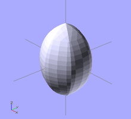
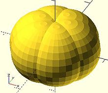
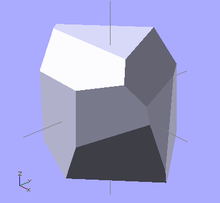

For loop
Evaluate each value in a range or vector, applying it to the following Action.
for(variable = [start : increment : end]) for(variable = [start : end]) for(variable = [vector])
parameters
- As a range [ start : <increment : > end ] (see section on range)
- Note: For range, values are separated by colons rather than commas used in vectors.
- start - initial value
- increment or step - amount to increase the value, optional, default = 1
- end - stop when next value would be past end
- examples:
for (a =[3:5])echo(a); // 3 4 5
for (a =[3:0]){echo(a);} // 0 1 2 3 start > end is invalid, deprecated by 2015.3
for (a =[3:0.5:5])echo(a); // 3 3.5 4 4.5 5
for (a =[0:2:5])echo(a); // 0 2 4 a never equals end
for (a =[3:-2:-1])echo(a); // 3 1 -1 negative increment requires 2015.3
be sure end < start
- As a vector
- The Action is evaluated for each element of the vector
for (a =[3,4,1,5])echo(a); // 3 4 1 5
for (a =[0.3,PI,1,99]){echo(a);} // 0.3 3.14159 1 99
x1=2; x2=8; x3=5.5;
for (a =[x1,x2,x3]){echo(a);} // 2 8 5.5
for (a =[[1,2],6,"s",[[3,4],[5,6]]])echo(a); // [1,2] 6 "s" [[3,4],[5,6]]
- The vector can be described elsewhere, like 'for each' in other languages
animals = ["elephants", "snakes", "tigers", "giraffes"];
for(animal = animals)
echo(str("I've been to the zoo and saw ", animal));
// "I've been to the zoo and saw elephants", for each animal
for() is an Operator. Operators require braces {} if more than one Action is within it scope. Actions end in semicolons, Operators do not.
for() is not an exception to the rule about variables having only one value within a scope. Each evaluation is given its own scope, allowing any variables to have unique values. No, you still can't do a=a+1;
Remember this is not an iterative language, the for() does not loop in the programmatic sense, it builds a tree of objects one branch for each item in the range/vector, inside each branch the 'variable' is a specific and separate instantiation or scope.
Hence:
for (i=[0:3])
translate([i*10,0,0])
cube(i+1);
Produces: [See Design/Display-CSG-Tree menu]
group() {
group() {
multmatrix([[1, 0, 0, 0], [0, 1, 0, 0], [0, 0, 1, 0], [0, 0, 0, 1]]) {
cube(size = [1, 1, 1], center = false);
}
multmatrix([[1, 0, 0, 10], [0, 1, 0, 0], [0, 0, 1, 0], [0, 0, 0, 1]]) {
cube(size = [2, 2, 2], center = false);
}
multmatrix([[1, 0, 0, 20], [0, 1, 0, 0], [0, 0, 1, 0], [0, 0, 0, 1]]) {
cube(size = [3, 3, 3], center = false);
}
multmatrix([[1, 0, 0, 30], [0, 1, 0, 0], [0, 0, 1, 0], [0, 0, 0, 1]]) {
cube(size = [4, 4, 4], center = false);
}
}
}
While the group() is built sequentially, all instances of the for() exist as separate entities, they do not iterate one piece of code sequentially.
- Nested for()
While it is reasonable to nest multiple for() statements such as:
for(z=[-180:45:+180])
for(x=[10:5:50])
rotate([0,0,z]) translate([x,0,0]) cube(1);
instead, all ranges/vectors can be included in the same for() operator.
for ( variable1 = <range or vector> , variable2 = <range or vector> ) <do something using both variables>
{kind=link}
example for() nested 3 deep
color_vec = ["black","red","blue","green","pink","purple"];
for (x = [-20:10:20] )
for (y = [0:4] )color(color_vec[y])
for (z = [0,4,10] )
{translate([x,y*5-10,z])cube();}
shorthand nesting for same result
color_vec = ["black","red","blue","green","pink","purple"];
for (x = [-20:10:20],
y = [0:4],
z = [0,4,10] )
translate([x,y*5-10,z]){color(color_vec[y])cube();}
- Examples using vector of vectors
{kind=link}
example 1 - iteration over a vector of vectors (rotation)
for(i = [ [ 0, 0, 0],
[ 10, 20, 300],
[200, 40, 57],
[ 20, 88, 57] ])
{
rotate(i)
cube([100, 20, 20], center = true);
}
{kind=link}
example 2 - iteration over a vector of vectors (translation)
for(i = [ [ 0, 0, 0],
[10, 12, 10],
[20, 24, 20],
[30, 36, 30],
[20, 48, 40],
[10, 60, 50] ])
{
translate(i)
cube([50, 15, 10], center = true);
}

example 3 - iteration over a vector of vectors
for(i = [ [[ 0, 0, 0], 20],
[[10, 12, 10], 50],
[[20, 24, 20], 70],
[[30, 36, 30], 10],
[[20, 48, 40], 30],
[[10, 60, 50], 40] ])
{
translate([i[0][0], 2*i[0][1], 0])
cube([10, 15, i[1]]);
}
Intersection For Loop
Iterate over the values in a range or vector and create the intersection of objects created by each pass.
Besides creating separate instances for each pass, the standard for() also groups all these instances creating an implicit union. intersection_for() is a work around because the implicit union prevents getting the expected results using a combination of the standard for() and intersection() statements.
intersection_for() uses the same parameters, and works the same as a For Loop, other than eliminating the implicit union.
| example 1 - loop over a range: | ||
intersection_for(n = [1 : 6])
{
rotate([0, 0, n * 60])
{
translate([5,0,0])
sphere(r=12);
}
}
|
 intersection_for() |
 either intersection() for() or for() intersection() |
{kind=link}
{kind=link}
| example 2 - rotation : | ||
intersection_for(i = [ [ 0, 0, 0],
[ 10, 20, 300],
[200, 40, 57],
[ 20, 88, 57] ])
{
rotate(i)
cube([100, 20, 20], center = true);
}
|
 intersection_for() |
 intersection() for() |
{kind=link}
If Statement
Performs a test to determine if the actions in a sub scope should be performed or not.
if (test) scope1
if (test){scope1}
if (test) scope1 else scope2
if (test){scope1} else {scope2}
- Parameters
- test: Usually a boolean expression, but can be any value or variable.
- See here for true or false state of values.
- See here for boolean and logical operators
- Do not confuse the assignment operator '=' with the equal operator '=='
- scope1: one or more actions to take when test is true.
- scope2: one or more actions to take when test is false.
- test: Usually a boolean expression, but can be any value or variable.
if (b==a) cube(4);
if (b<a) {cube(4); cylinder(6);}
if (b&&a) {cube(4); cylinder(6);}
if (b!=a) cube(4); else cylinder(3);
if (b) {cube(4); cylinder(6);} else {cylinder(10,5,5);}
if (!true){cube(4); cylinder(6);} else cylinder(10,5,5);
if (x>y) cube(1, center=false); else {cube(size = 2, center = true);}
if (a==4) {} else echo("a is not 4");
if ((b<5)&&(a>8)) {cube(4);} else {cylinder(3);}
if (b<5&&a>8) cube(4); else cylinder(3);
Since 2015.03 variables can now be assigned in any scope. Note that assignments are only valid within the scope in which they are defined - you are still not allowed to leak values to an outer scope. See Scope of variables for more details.
- Nested if
The scopes of both the if() portion and the else portion, can in turn contain if() statements. This nesting can be to many depths.
if (test1)
{
scope1 if (test2) {scope2.1}
else {scope2.2}
}
else
{
scope2 if (test3) {scope3.1}
else {scope3.2}
}
When scope1 and scope2 contain only the if() statement, the outer sets of braces can be removed.
if (test1)
if (test2) {scope2.1}
else {scope2.2}
else
if (test3) {scope3.1}
else {scope3.2}
One evolution is this:
else if
if(test1) {scope1}
else if(test2) {scope2}
else if(test3) {scope3}
else if(test4) {scope4}
else {scope5}
Note that else and if are two separate words. When working down the chain of tests, the first true uses its scope. All further tests are skipped.
- example
if((k<8)&&(m>1)) cube(10);
else if(y==6) {sphere(6);cube(10);}
else if(y==7) color("blue")sphere(5);
else if(k+m!=8) {cylinder(15,5,0);sphere(8);}
else color("green"){cylinder(12,5,0);sphere(8);}
Conditional ? :
A function that uses a test to determine which of 2 values to return.
a = test ? TrueValue : FalseValue ; echo( test ? TrueValue : FalseValue );
- Parameters
- test: Usually a boolean expression, but can be any value or variable.
- See here for true or false state of values.
- See here for boolean and logical operators
- Do not confuse assignment '=' with equal '=='
- TrueValue: the value to return when test is true.
- FalseValue: the value to return when test is false.
- A value in OpenSCAD is either a Number (like 42), a Boolean (like true), a String (like "foo"), a Vector (like [1,2,3]), or the Undefined value (undef). Values can be stored in variables, passed as function arguments, and returned as function results.
- test: Usually a boolean expression, but can be any value or variable.
This works like the ?: operator from the family of C-like programming languages.
- Examples
a=1; b=2; c= a==b ? 4 : 5 ; // 5 a=1; b=2; c= a==b ? "a==b" : "a!=b" ; // "a!=b" TrueValue = true; FalseValue = false; a=5; test = a==1; echo( test ? TrueValue : FalseValue ); // false L = 75; R = 2; test = (L/R)>25; TrueValue = [test,L,R,L/R,cos(30)]; FalseValue = [test,L,R,sin(15)]; a1 = test ? TrueValue : FalseValue ; // [true, 75, 2, 37.5, 0.866025]
Some forms of tail-recursion elimination are supported.
Recursive function calls
Recursive function calls are supported. Using the Conditional "... ? ... : ... " it's possible to ensure the recursion is terminated. Note: There is a built-in recursion limit to prevent an application crash. If the limit is hit, the function returns undef.
- example
// recursion - find the sum of the values in a vector (array) by calling itself
// from the start (or s'th element) to the i'th element - remember elements are zero based
function sumv(v, i, s = 0) = (i == s ? v[i] : v[i] + sumv(v, i-1, s));
vec=[ 10, 20, 30, 40 ];
echo("sum vec=", sumv(vec, 2, 1)); // calculates 20+30=50
Formatting complex usage
Multiple nested conditionals can become difficult to understand. Formatting them like multi-line indented "if/else" statements is clearer.
// find the maximum value in a vector
function maxv(v, m=-999999999999, i=0) =
(i == len(v) )
? m
: (m > v[i])
? maxv(v, m, i+1)
: maxv(v, v[i], i+1);
v=[7,3,9,3,5,6];
echo("max",maxv(v)); // ECHO: "max", 9
Assign Statement
[Deprecated: assign() will be removed in future releases. Variables can now be assigned anywhere. If you prefer this way of setting values, the new Let Statement can be used instead.]
Set variables to a new value for a sub-tree.
- Parameters
- The variables that should be (re-)assigned
- example:
for (i = [10:50])
{
assign (angle = i*360/20, distance = i*10, r = i*2)
{
rotate(angle, [1, 0, 0])
translate([0, distance, 0])
sphere(r = r);
}
}
for (i = [10:50])
{
angle = i*360/20;
distance = i*10;
r = i*2;
rotate(angle, [1, 0, 0])
translate([0, distance, 0])
sphere(r = r);
}
Let Statement
[Note: Requires version 2019.05]
Set variables to a new value for a sub-tree. The parameters are evaluated sequentially and may depend on each other (as opposed to the deprecated assign() statement).
- Parameters
- The variables that should be set
- example:
for (i = [10:50])
{
let (angle = i*360/20, r= i*2, distance = r*5)
{
rotate(angle, [1, 0, 0])
translate([0, distance, 0])
sphere(r = r);
}
}